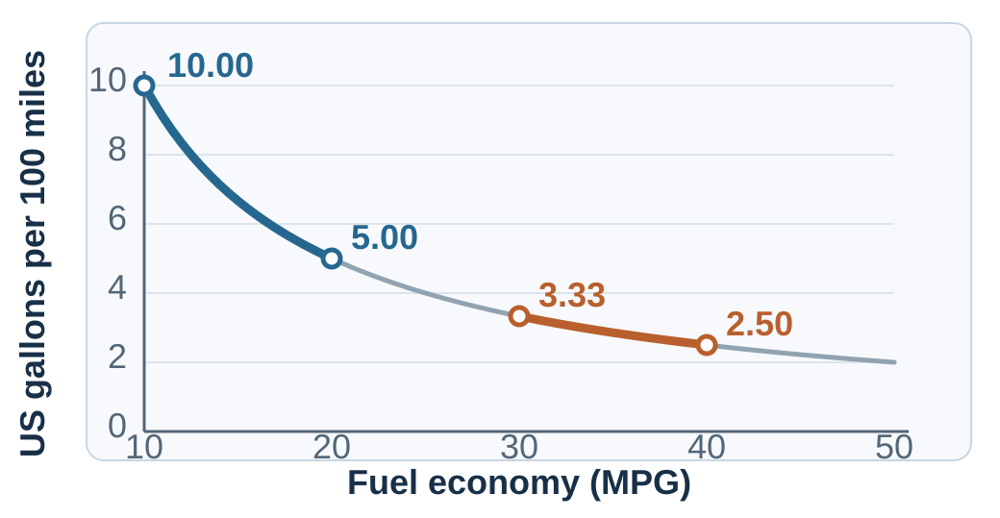
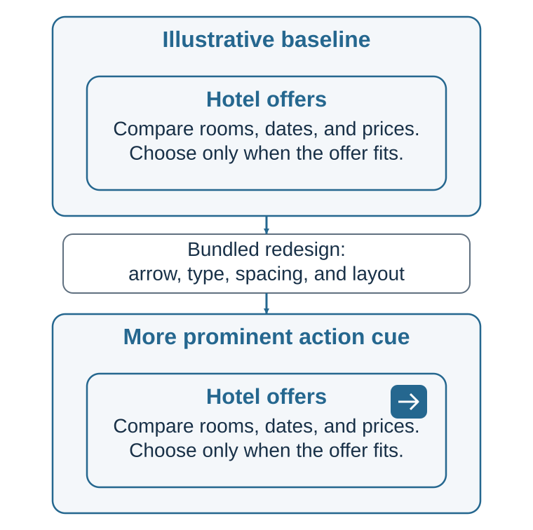

40 Choice Architecture
The Environment Gets a Vote
“We shape our buildings, and afterwards our buildings shape us.”
— Winston Churchill, speech on rebuilding the House of Commons, 28 October 1943
Imagine enrolling in a retirement plan. The contribution field already says 6 percent, a recommended fund sits first, and the opt-out link is in smaller type. You can choose another arrangement, but doing so requires more attention than accepting the form as it stands.
The prefilled contribution is both a suggested number and, if inaction implements it, a default. The highlighted fund may look like advice. Whether these features help depends on how well they fit the person’s circumstances and how easily alternatives can be understood and selected.
The same attention and effort can also be used to make an unwanted commitment persist. A subscription site makes enrollment one click and cancellation nine screens. A travel site labels an expensive option “most popular” without explaining the comparison. A checkout page adds a warranty unless the buyer notices a faint checkbox. These designs use the same behavioral mechanisms, but their objective and treatment of exit are different.
In each case, someone designed the path through the decision. To evaluate it, we need to follow that path from the first prompt through acceptance, refusal, or a later change of mind. The question is whether it helps people act on informed goals, or makes a choice profitable for the designer at their expense.
Learning goals
- Diagnose where a menu, default, mapping, friction, timing, social signal, or feedback changes a choice path.
- Compare nudges with boosts, incentives, mandates, and structural change for the same barrier.
- Design and test an intervention that protects understanding, welfare, and meaningful exit.
From behavior design to choice architecture
The previous chapter began with a person trying to change a recurring action. Here the designer may be an institution shaping choices for many people with different needs. A retirement-plan administrator, for example, decides which funds are offered, how contributions are explained, and what happens if an employee leaves a field unanswered. Earlier chapters help us examine each influence; the task now is to understand how they work together along the whole path.
Richard Thaler and Cass Sunstein use choice architecture for the way choices are organized and nudge for an intervention that predictably changes behavior without banning options or substantially altering economic incentives (Thaler & Sunstein, 2008). Defaults, reminders, simpler forms, social-norm messages, and rearranged menus can be nudges. A large tax, a prohibition, or a compulsory rule is not merely a nudge, although it may be justified on other grounds.
Keep three levels separate. Choice architecture is the broad environment. A nudge is one feature of that environment. Libertarian paternalism is a normative argument for some welfare-oriented nudges: preserve meaningful choice while helping people act in ways they themselves would endorse under reflection. Evaluate a nudge’s objective and ethics alongside its effects.
Before choosing an intervention, compare the tools available:
| Instrument | What it changes | Example | Central question |
|---|---|---|---|
| Education | Facts and explanation | Balanced guide to vaccine benefits and risks | Can the person understand and use the information at the relevant moment? |
| Nudge | The immediate choice environment | Put healthier food first; send a timely reminder | Does the architecture help without closing meaningful options? |
| Boost | The person’s competence | Teach natural frequencies or negotiation preparation | Will the skill transfer beyond this environment? |
| Incentive | The material payoff | Deposit refund; late fee; performance bonus | Is the reward aligned with the desired outcome and protected from gaming? |
| Mandate | The available actions or minimum standard | Safety requirement; disclosure rule | Is restriction proportionate to the risk and rights involved? |
| Structural change | The conditions producing the problem | Staffing, access, pricing, transport, or workload reform | Is individual choice really the main bottleneck? |
The choice among the instruments in Table 40.1 depends on the obstacle. A reminder may help someone who forgets an appointment; an unaffordable service calls for a response to cost. Likewise, a clearer menu cannot supply a useful option that the institution never offered.
The plausible path: where architecture enters the loop
To locate the barrier a design must address, trace the proposal from its objective to what the person can choose, understand, do, and correct:
- Objective. What outcome is being improved, for whom, and according to whose values?
- Menu. Which options are available, missing, grouped, ordered, or made normal?
- Understanding. Can people map each option to consequences they can compare?
- Action. Can intention survive attention limits, timing, friction, and competing demands?
- Feedback. Can people see what happened and revise the next choice?
A path is also a way of searching. The intertemporal-choice experiment in Chapter 20 contrasts evaluating each option as a bundle with comparing amounts and delays across options. An interface can encourage either route before a preference is expressed. The same distinction matters for a menu or insurance comparison: displaying all the facts does not ensure that people compare the relevant ones.
These questions connect an intervention to the problem it should solve. “Add a reminder” names a change, but leaves its purpose unexplained. A testable proposal is more specific: eligible people already intend to book; forgetting at the relevant moment is a major barrier; a timely reminder makes the action salient; the booking path is feasible; and attendance can be measured without creating new burdens.
Construct and explain the choice
Set the starting point: defaults and active choice
The retirement form must handle an unanswered field somehow. Leaving it blank can delay a useful action; filling it in can turn inattention into a consequential commitment. Designers need to decide whose interests the starting point serves and when to require an active choice. A default is what happens if a person does nothing. Defaults are powerful because doing nothing is often easier, because the default may be interpreted as advice, and because moving away from a starting point can feel like giving something up (Johnson & Goldstein, 2003; Jachimowicz et al., 2019).
Defaults can be helpful when preferences are broadly aligned, inaction is common, reversibility is high, and the default is a reasonable recommendation. They are more dangerous when preferences vary greatly, switching costs are hidden, the default benefits the designer at the chooser’s expense, or non-response is treated as meaningful consent.
Compare three designs:
- Opt-in: no enrollment without an affirmative action. Appropriate when consent must be explicit or preferences are highly heterogeneous.
- Opt-out: enrollment occurs unless declined. Appropriate when the default is evidence-based, low-risk, reversible, and aligned with most affected people’s considered goals.
- Active choice: the person must select among clearly described options. Appropriate when preference is essential and omission should not decide, but it can become burdensome when the choice is frequent, technical, or badly timed.
A smart default uses relevant, legitimate information to improve fit—for example, a retirement contribution that responds to age and employer match. It also raises governance questions: Which data are used? Can the recommendation be explained? Does personalization create discrimination? How easily can a person choose otherwise?
Automatic enrollment substantially increased participation in one large 401(k) plan compared with its previous opt-in system, while active-decision designs have raised participation relative to ordinary opt-in systems (Madrian & Shea, 2001; Carroll et al., 2009). In Johnson and Goldstein’s (2003) experiment, default wording changed stated organ-donation consent. That outcome is different from a completed donation. A later longitudinal analysis of five countries switching to opt-out found no average increase in deceased organ donation after the change (Dallacker et al., 2024). The opening chapter makes the distinction between the form and the system: eligibility, family involvement, trust, coordination, and clinical capacity also matter.
Make consequences understandable: mapping and metrics
A menu can make features easy to compare while leaving their consequences obscure. If the most prominent number is a poor guide to cost or risk, easier comparison can still lead to a poor trade-off. Mapping connects the selectable feature to the outcome that matters. A mortgage rate must be mapped to total cost and payment risk. A medical probability must be mapped to natural frequencies and meaningful time horizons. Energy use must be mapped to money, emissions, or another metric the audience can interpret.
Make the comparison reconstructable: use the same time horizon and denominator, show total cost alongside installments, and distinguish an estimate from a guarantee. For probabilities, natural frequencies and absolute risks can help readers see quantities that relative percentages obscure. Chapter 14 develops those formats.
Metrics are frames. Chapter 12 showed why equivalent descriptions can change choice; architecture determines which description becomes the default view. “Save €40 per month” and “save €480 per year” are equivalent arithmetically but not psychologically. A fair design does not pretend framing can be eliminated; it uses symmetric, decision-relevant representations and makes important alternative frames available.
Even familiar units can map poorly. The curve in Figure 40.1 shows that miles per gallon is nonlinear in fuel consumed: an improvement from 10 to 20 MPG saves much more fuel over a fixed distance than an improvement from 30 to 40 MPG. Gallons per hundred miles makes that consequence easier to compare (Larrick & Soll, 2008). The design question is not which unit looks intuitive, but which one reveals the welfare-relevant difference.

A useful number can also arrive too late in the sequence of attention. Dallas, Liu, and Ubel (2019) found that American participants ordered fewer calories when calorie counts appeared to the left of food names rather than to the right; a Hebrew-language study reversed the pattern. This supports the idea that reading direction can affect when a consequence enters the comparison. In a different lunch-menu experiment with eye tracking, Robertson and Lunn (2020) found the strongest effect when calories appeared just to the right of the price. Their participants made actual lunch choices without initially knowing those choices were being studied.
Taken together, these studies justify testing the whole layout: food description, price, calorie count, typography, and reading habits. Measure what people notice, order, and consume separately. A universal instruction to “put calories on the left” would turn a finding about attention in particular displays into a rule that ignores the display.
The same principle applies to mental accounting (Thaler, 1985). A budget category can help someone control spending while hiding the total cost across accounts. Show both the local choice and its effect on the whole budget, as discussed in Chapter 19.
Make action feasible and feedback visible
Simplification, friction, and sludge
Friction is not trivial. A form, password, waiting period, extra click, inconvenient appointment time, ambiguous instruction, or request for a document can determine whether an intention becomes behavior. Removing unjustified friction can improve access without changing anyone’s underlying preference.
At Copenhagen Airport, two customs-area exit doors were available, yet nearly nine in ten observed passengers used the right one. Hulgaard and colleagues (2016) marked two lanes with floor tape and exit instructions, making the left lane wider. The left-door share was 10.75% in a control period, 16.55% during a dark-green intervention, and 24.50% during a neon-green intervention. Across periods, 10,895 passengers were counted. This made an existing alternative more apparent without adding a door.
The practitioner report also states the design’s limits. Conditions occurred at different times rather than through random assignment, and passengers could follow one another, so observations were not independent. The comparison cannot isolate tape color, lane width, or signage, or establish reduced waiting time. Its practical contribution is a plausible diagnosis and a low-cost redesign worth testing more carefully.
The barrier can be physical. In a hospital cafeteria, Thorndike and colleagues (2012) first introduced three months of traffic-light nutrition labels, then added three months of changes to food and drink placement. Bottled water moved to eye level in refrigerators and baskets near food stations, while other drinks remained available. During the second phase, water’s share of beverage purchases rose by 3.4 percentage points, compared with 0.3 points at two other on-site cafeterias. This sequential, nonrandomized study examined placement changes added to existing labels; it did not isolate water placement alone or establish a health benefit. It shows why a label and an accessible choice deserve separate attention.
But friction also protects. Confirmation screens, cooling-off periods, withdrawal limits, and deliberate pauses can reduce impulsive or irreversible harm. The right question is not “Can we remove a click?” It is “Which error does this friction prevent, and whose interest does it serve?”
Sludge is excessive or unjustified friction that makes a beneficial action difficult or an unwanted action hard to escape (Sunstein, 2021). Dark patterns reverse the ethical direction of good design: they exploit attention and effort to obtain consent, extract data, add charges, or obstruct cancellation.
A simple symmetry test is revealing:
If joining is easy, is leaving comparably easy? If consent is prominent, is refusal equally legible? If the likely benefit is vivid, are material costs and risks comparably recoverable?
Simplification must preserve meaning. Shortening a form helps only if the remaining questions still protect eligibility, safety, and informed choice. The paired remotes in Figure 40.2 make this condition visible: hiding controls helps only if the controls needed for the task remain accessible. Likewise, removing text is not the same as reducing cognitive work; sometimes a comparison table or worked example adds words while making the decision easier.
Administrative burden has at least three components: learning what exists and whether one qualifies, complying with procedures, and bearing the stress, stigma, or loss of autonomy attached to the process (Herd & Moynihan, 2018). Field studies show why this distinction matters. Simpler benefit notices increased take-up of an earned-income tax credit compared with a more complex notice based on the original IRS letter. Hands-on assistance with financial-aid forms, combined with personalized aid information, improved aid receipt and college enrollment relative to a control group receiving general information; personalized information without assistance did not produce the same gains (Bhargava & Manoli, 2015; Bettinger et al., 2012). A sludge audit should therefore count time and steps and ask who must translate, disclose, wait, travel, or absorb psychological cost.
Support action at the right moment
Information delivered at the wrong time is often inert. A reminder can close an intention–action gap when the person has already formed an intention, forgetting is plausible, and the action is feasible at the moment of contact. A reminder does not itself remove cost, fear, low trust, unavailable appointments, or disagreement with the goal.
A cue can also bring an existing goal into attention. Papies and colleagues (2014) gave supermarket shoppers a recipe flyer with either health-related wording or neutral wording, then examined their receipts. Among participants classified as overweight or obese, the health-cue condition was associated with fewer purchased snack units. The effect was concentrated among people reporting some initial attention to the flyer; it did not require reporting that they thought about it while shopping. This was a small, single-store field study with 99 participants, mostly women, and conditions alternated across shopping periods. The measure was purchases on one visit, not consumption or lasting weight change. The case suggests a testable use of a timely goal cue; it does not show that unnoticed words reliably control behavior or that the same cue helps every shopper.
Forgetting is one possible barrier; planning is another. A reminder can include a concrete opportunity to act, such as choosing a date and time, while making rescheduling easy. If the barrier is an unattractive immediate experience, the temptation-bundling example in Chapter 39 illustrates a different mechanism: link the activity to an immediate reward (Milkman et al., 2014). Urgency should reflect a real constraint rather than pressure the person to decide before inspecting the terms.
The planning experiments in Chapter 39 give a useful contrast: date-and-time prompts increased workplace vaccination, whereas scheduling gym visits did not increase attendance. Evidence for a planning field therefore depends on the task, not just the form of the prompt (Milkman et al., 2011). Commitment devices address a different problem by letting a person constrain a predictable future choice; because they may impose costs, they are not always nudges in the strict sense. Save More Tomorrow illustrates a hybrid: workers committed part of future salary increases to saving, combining advance commitment, timing, and inertia (Thaler & Benartzi, 2004).
Salience is selective. Making one action vivid necessarily pushes something else toward the background. Ethical design therefore asks not only what the cue reveals, but what it makes easier to forget.
An input can be irrelevant to an option’s objective consequences and still be causally relevant to the decision process. In 2012, Google added a clickable right-pointing arrow while also changing font size, spacing, and text layout in advertisements on its Display Network. The hotel offer did not become better merely because an arrow appeared, but the route from noticing the offer to clicking it became more prominent. Google reported higher clicks after the bundled redesign (Land & Yuan, 2012).1
The arrow in the illustrative comparison in Figure 40.3 makes the next action easier to recognize without changing the offer. Whether the increased clicking helped users requires a further comparison with outcomes they value, such as finding a suitable service.

Close the loop: feedback and error-proofing
Feedback is useful when it is timely, interpretable, attributable, and linked to an action the person can take. A vague annual report may arrive too late to guide a repeated behavior. A real-time warning may be ignored if it fires constantly. A progress display may motivate when the target is meaningful, but game behavior when the metric becomes the goal.
Error-proofing designs around predictable mistakes. Examples include showing the selected account before a transfer, warning about duplicate medication, previewing who will receive a message, requiring a second person for an irreversible organizational action, or making the cost of delay visible before a deadline passes.
Feedback also belongs to the designer. An intervention should generate evidence about who receives it, who acts, who benefits, who is burdened, and which unintended effects appear. Without that loop, a nudge can persist because it is elegant rather than because it works.
Home-energy reports illustrate the full learning problem. Households sent repeated comparison and action feedback used less electricity than households assigned to receive no reports. Some of that difference persisted after reports stopped, although it decayed over time (Allcott & Rogers, 2014). The relevant outcome is not merely whether one message moved behavior once, but whether the architecture produced useful, durable learning without making already-efficient households regress.
Test and govern the whole path
Digital architecture operates at full-path scale
Digital systems can personalize menus, defaults, ranking, timing, social evidence, and feedback simultaneously. That makes them powerful and difficult to audit. A platform does not merely host choices; its recommender system decides what becomes visible, its interface defines the next easiest action, and its metrics determine what the system learns to optimize.
Audit the platform’s metric against the user’s objective. Time on site can rise while satisfaction falls, and a successful purchase may be followed by a difficult cancellation. Personalization adds another problem: different users may encounter different terms or obstacles, making a single screenshot an inadequate audit.
Keep records of the paths shown, provide understandable controls, and examine outcomes across relevant groups. Users need a way to correct a mistaken recommendation or challenge an unwanted consequence.
Dark patterns are not only hypothetical. Design research has catalogued interfaces that obstruct, sneak, pressure, or misdirect, and a large crawl documented such patterns across shopping websites (Gray et al., 2018; Mathur et al., 2019). Continuous personalization and experimentation raise the governance burden: the same system can expose different people to different paths while leaving no shared interface for outsiders to inspect.
For these digital paths, a technically available option may still be difficult to exercise. A cancellation route that requires exceptional time or persistence provides little practical freedom to leave. Use Table 40.2 to examine both what the design offers and what using it actually requires, including the effort needed to refuse or correct a choice:
| Test | Question |
|---|---|
| Purpose | Whose objective is being advanced? |
| Welfare | Would affected people endorse the objective under informed reflection? |
| Evidence | Is there a credible mechanism and proportionate evidence? |
| Transparency | Can people understand the material feature and the designer’s role? |
| Exit | Is refusal, switching, or correction practically easy? |
| Distribution | Who benefits, who bears burdens, and are vulnerable groups protected? |
| Plural values | Are legitimate preferences diverse enough that active choice is safer than a strong default? |
| Nonexploitation | Does the feature support informed action rather than use confusion, urgency, or inattention against the chooser? |
| Accountability | Who monitors the path, answers challenges, and removes a design that does not earn its place? |
| Proportionality | Is the strength of influence justified by the problem, evidence, stakes, and rights involved? |
Make material facts, sponsorship, data use, and options easy to inspect along the actual user path.
Treat every intervention as a hypothesis
Behavioral effects are heterogeneous. An average effect may conceal strong benefit for one group, no effect for another, and harm for a third. Context, trust, baseline behavior, implementation quality, and the availability of good options all matter. Mertens et al. (2022) reported an average behavioral effect across diverse choice-architecture studies, but its magnitude and robustness to publication bias have been disputed. A reanalysis using different publication-bias adjustments found no clear average effect (Maier et al., 2022). This disagreement makes evidence for the particular design and setting essential.
Scale is a separate test. Quantitative reviews find substantial variation across nudge designs, and trials run at scale by public nudge units have produced more modest average effects than prominent academic studies might lead designers to expect (Hummel & Maedche, 2019; DellaVigna & Linos, 2022). DellaVigna and Linos found average increases in take-up of 1.4 percentage points in the nudge-unit trials and 8.7 points in the academic-journal comparison.2 Evaluate the design in the setting where it will operate.
Other decision-makers can also change the environment after an intervention begins. A larger policy change makes this interdependence visible. Diamond, McQuade, and Qian (2019) studied San Francisco’s 1994 expansion of rent control, comparing affected buildings with similar buildings that remained exempt. The policy helped existing tenants remain in their homes and reduced displacement from the city. But affected landlords also sold properties to owner-occupants or redeveloped them, reducing the supply of rental housing in the treated properties by about 15%. Protection for incumbent tenants and reduced access for future renters could emerge from the same policy.
Rent regulation changes legal rights and financial incentives, extending beyond a nudge. The lesson for evaluating a choice environment is that an immediate response may not be its final effect. A simplified application can increase demand for a service whose capacity remains fixed; an easier switching process can prompt providers to improve terms or introduce obstacles elsewhere. Follow the responses of suppliers and institutions as well as the people initially targeted. A design can work at the first step while changing the options available at the next.
Evaluation should therefore precede celebration. Define the target outcome, mechanism, baseline, comparison, time horizon, and possible harm before launch. When feasible, pilot or randomize. Measure behavior rather than intention alone. Check persistence and spillovers. Compare the nudge with plausible alternatives, including a boost, an incentive, service redesign, or no intervention.
A null result narrows the inquiry only when the study can distinguish the explanations. Check delivery, precision, timing, and access before concluding that forgetting was unimportant. Repeating the reminder more often will not resolve a transport barrier.
Apply the plausible-path design cycle
Use a short record linking the target outcome, diagnosed barrier, proposed change, comparison, and review date. Include a competing intervention and a possible harm. The two examples below show why following the full path can change the diagnosis.
Suppose a clinic wants to reduce missed appointments. A reminder seems a direct way to recover unused slots, but a patient who cannot reach the clinic gains no transport from another message. The same missed visit can call for a different intervention. Before spending effort on reminders, the team checks whether missed visits cluster by time, transport access, language, cost, waiting time, or difficulty cancelling.
If forgetting is important, a reminder can state the time, place, preparation, and one-tap paths to confirm, reschedule, or cancel. The message arrives while action is possible. The clinic measures attendance, timely cancellation, rescheduling, staff burden, and subgroup effects. If transport or unpredictable work is the real barrier, reminders alone will disappoint; flexible scheduling or service redesign is needed.
A digital service can be joined with one prominent button but requires a search, password re-entry, retention offers, and a telephone call to leave. The business may describe each screen as an opportunity to prevent an accidental cancellation. The full path reveals a different objective: friction is asymmetric, the expected revenue from inattention accrues to the designer, and exit exists formally while being costly in practice.
A defensible redesign makes the current plan, renewal date, total cost, data consequences, and cancellation control visible in the same account area. Leaving should require confirmation proportionate to the consequences, not endurance. A brief, freely dismissible offer to pause or change plans may be legitimate when it does not obscure cancellation. Evaluation should include successful cancellation, time and errors, unwanted renewals, complaints, and differential burden—not only retained revenue.
Practice Lab: architecture autopsy and redesign
In groups, document one real choice path from first cue to feedback. Mark the menu, default, mapping, friction, timing, social information, and exit. Then write a one-sentence causal claim: “Changing X should affect Y because mechanism Z.” Propose one alternative instrument and one harm measure. Exchange designs and ask: Would this remain defensible if users understood it completely?
Take it forward
Follow the choice path as the person using it would: from the first prompt to the action and its consequences. Look especially at the point where an understandable intention becomes difficult to carry out. A useful redesign makes that point easier while keeping costs, alternatives, and exit visible.
Chapter practice
References cited in this chapter
Allcott, H., & Rogers, T. (2014). The short-run and long-run effects of behavioral interventions: Experimental evidence from energy conservation. American Economic Review, 104(10), 3003–3037.
Bettinger, E. P., Long, B. T., Oreopoulos, P., & Sanbonmatsu, L. (2012). The role of application assistance and information in college decisions: Results from the H&R Block FAFSA experiment. Quarterly Journal of Economics, 127(3), 1205–1242.
Bhargava, S., & Manoli, D. (2015). Psychological frictions and the incomplete take-up of social benefits: Evidence from an IRS field experiment. American Economic Review, 105(11), 3489–3529.
Bruch, E., Feinberg, F., & Lee, K. Y. (2016). Extracting multistage screening rules from online dating activity data. Proceedings of the National Academy of Sciences, 113(38), 10530–10535. https://doi.org/10.1073/pnas.1522494113
Carroll, G. D., Choi, J. J., Laibson, D., Madrian, B. C., & Metrick, A. (2009). Optimal defaults and active decisions. Quarterly Journal of Economics, 124(4), 1639–1674.
Chernev, A., Böckenholt, U., & Goodman, J. (2015). Choice overload: A conceptual review and meta-analysis. Journal of Consumer Psychology, 25(2), 333–358.
Dallacker, M., Appelius, L., Brandmaier, A. M., Morais, A. S., & Hertwig, R. (2024). Opt-out defaults do not increase organ donation rates. Public Health, 236, 436–440. https://doi.org/10.1016/j.puhe.2024.08.009
Dallas, S. K., Liu, P. J., & Ubel, P. A. (2019). Don’t count calorie labeling out: Calorie counts on the left side of menu items lead to lower calorie food choices. Journal of Consumer Psychology, 29(1), 60–69. https://doi.org/10.1002/jcpy.1053
DellaVigna, S., & Linos, E. (2022). RCTs to scale: Comprehensive evidence from two nudge units. Econometrica, 90(1), 81–116.
Dhar, R., & Simonson, I. (2003). The effect of forced choice on choice. Journal of Marketing Research, 40(2), 146–160. https://doi.org/10.1509/jmkr.40.2.146.19229
Diamond, R., McQuade, T., & Qian, F. (2019). The effects of rent control expansion on tenants, landlords, and inequality: Evidence from San Francisco. American Economic Review, 109(9), 3365–3394. https://doi.org/10.1257/aer.20181289
Frederick, S., Novemsky, N., Wang, J., Dhar, R., & Nowlis, S. (2009). Opportunity cost neglect. Journal of Consumer Research, 36(4), 553–561.
Gray, C. M., Kou, Y., Battles, B., Hoggatt, J., & Toombs, A. L. (2018). The dark patterns side of UX design. Proceedings of the 2018 CHI Conference on Human Factors in Computing Systems, 1–14.
Herd, P., & Moynihan, D. P. (2018). Administrative burden: Policymaking by other means. Russell Sage Foundation.
Hummel, D., & Maedche, A. (2019). How effective is nudging? A quantitative review on the effect sizes and limits of empirical nudging studies. Journal of Behavioral and Experimental Economics, 80, 47–58.
Hulgaard, K., Herrik, E., Madsen, T. K., Schuldt-Jensen, J., Maltesen, M., & Hansen, P. G. (2016). Nudging passenger flow in CPH Airports. iNudgeyou. https://inudgeyou.com/wp-content/uploads/2017/08/OP-ENG-Passenger_Flow.pdf
Iyengar, S. S., & Lepper, M. R. (2000). When choice is demotivating: Can one desire too much of a good thing? Journal of Personality and Social Psychology, 79(6), 995–1006.
Jachimowicz, J. M., Duncan, S., Weber, E. U., & Johnson, E. J. (2019). When and why defaults influence decisions: A meta-analysis of default effects. Behavioural Public Policy, 3(2), 159–186.
Johnson, E. J., & Goldstein, D. G. (2003). Do defaults save lives? Science, 302(5649), 1338–1339. https://doi.org/10.1126/science.1091721
Land, J., & Yuan, S. (2012, December 3). Enhancing text ads on the Google Display Network. Inside AdSense. https://adsense.googleblog.com/2012/12/enhancing-text-ads-on-google-display.html
Larrick, R. P., & Soll, J. B. (2008). The MPG illusion. Science, 320(5883), 1593–1594.
Madrian, B. C., & Shea, D. F. (2001). The power of suggestion: Inertia in 401(k) participation and savings behavior. Quarterly Journal of Economics, 116(4), 1149–1187. https://doi.org/10.1162/003355301753265543
Maier, M., Bartoš, F., Stanley, T. D., Shanks, D. R., Harris, A. J. L., & Wagenmakers, E.-J. (2022). No evidence for nudging after adjusting for publication bias. Proceedings of the National Academy of Sciences, 119(31), e2200300119. https://doi.org/10.1073/pnas.2200300119
Mathur, A., Acar, G., Friedman, M. J., Lucherini, E., Mayer, J., Chetty, M., & Narayanan, A. (2019). Dark patterns at scale: Findings from a crawl of 11K shopping websites. Proceedings of the ACM on Human-Computer Interaction, 3(CSCW), 1–32.
Mertens, S., Herberz, M., Hahnel, U. J. J., & Brosch, T. (2022). The effectiveness of nudging: A meta-analysis of choice architecture interventions across behavioral domains. Proceedings of the National Academy of Sciences, 119(1), e2107346118.
Milkman, K. L., Beshears, J., Choi, J. J., Laibson, D., & Madrian, B. C. (2011). Using implementation intentions prompts to enhance influenza vaccination rates. Proceedings of the National Academy of Sciences, 108(26), 10415–10420. https://doi.org/10.1073/pnas.1103170108
Milkman, K. L., Minson, J. A., & Volpp, K. G. M. (2014). Holding the Hunger Games hostage at the gym: An evaluation of temptation bundling. Management Science, 60(2), 283–299. https://doi.org/10.1287/mnsc.2013.1784
Papies, E. K., Potjes, I., Keesman, M., Schwinghammer, S., & van Koningsbruggen, G. M. (2014). Using health primes to reduce unhealthy snack purchases among overweight consumers in a grocery store. International Journal of Obesity, 38(4), 597–602. https://doi.org/10.1038/ijo.2013.136
Robertson, D. A., & Lunn, P. D. (2020). The effect of spatial location of calorie information on choice, consumption and eye movements. Appetite, 144, 104446. https://doi.org/10.1016/j.appet.2019.104446
Scheibehenne, B., Greifeneder, R., & Todd, P. M. (2010). Can there ever be too many options? A meta-analytic review of choice overload. Journal of Consumer Research, 37(3), 409–425.
Schultz, P. W., Nolan, J. M., Cialdini, R. B., Goldstein, N. J., & Griskevicius, V. (2007). The constructive, destructive, and reconstructive power of social norms. Psychological Science, 18(5), 429–434.
Sparkman, G., & Walton, G. M. (2017). Dynamic norms promote sustainable behavior, even if it is counternormative. Psychological Science, 28(11), 1663–1674.
Sunstein, C. R. (2021). Sludge: What stops us from getting things done and what to do about it. MIT Press.
Thaler, R. H. (1985). Mental accounting and consumer choice. Marketing Science, 4(3), 199–214.
Thaler, R. H., & Benartzi, S. (2004). Save More Tomorrow: Using behavioral economics to increase employee saving. Journal of Political Economy, 112(S1), S164–S187.
Thaler, R. H., & Sunstein, C. R. (2008). Nudge: Improving decisions about health, wealth, and happiness. Yale University Press.
Thorndike, A. N., Sonnenberg, L., Riis, J., Barraclough, S., & Levy, D. E. (2012). A 2-phase labeling and choice architecture intervention to improve healthy food and beverage choices. American Journal of Public Health, 102(3), 527–533.